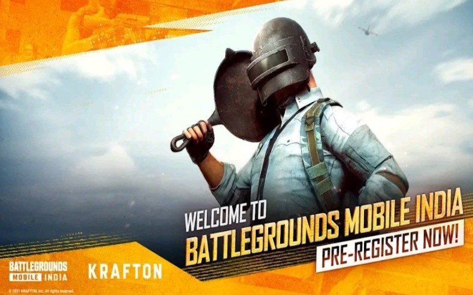

Is BGMI secretely communicating with China servers?
After the previous ban of the PUBG (Player Unknown's Battle Grounds) game by Tencent, as it was found to secretely communicate with Chinese servers, and sending the private data of the Indian players, the new Beta-release of the BGMI (Battle Grounds Mobile India) by KRAFTON had made the old gamers to go crazy over its release. But, what is the full proof guarantee that the new temporary release of BGMI in playstore also not safe? In a recent video which I saw, one of the users of BGMI, in an attempt to investigate the safeness of the app, was giving the live demonstration of playing the game besides listing the name of the servers with which the app communicates while in use, by sniffing internet traffic.
The results showed that, although many servers were located in Singapore and USA, some were also located in China by using whois.com for finding the informations pertaining to those domains. Some of the server domain names, which were located in China and were caught during the live play were, idcconfig.gcloudsdk.com and down.anticheatexpert.com and they were communicating with Chinese servers and sending and receiving information from there. Hence, we should refrain from playing such games if we really value our privacy and want our private data to not get exploited!
Published: 2nd Jul 2021
